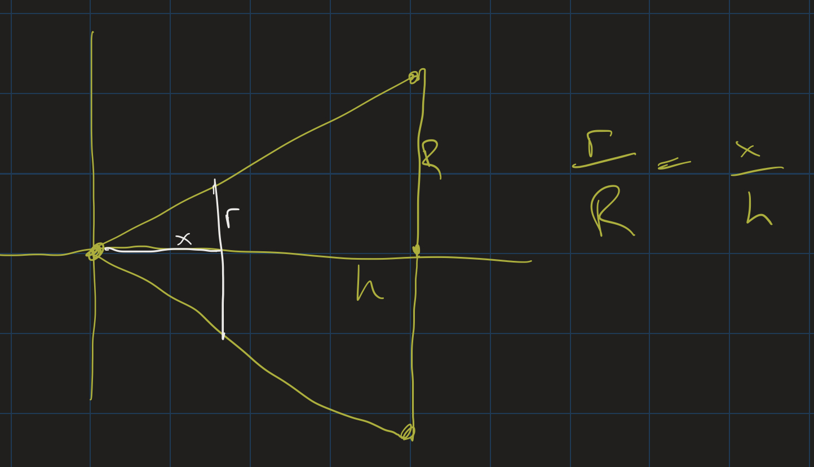

Calc II Lesson 9
Professor Abdul-Quader
11 March 2021
Exam 1 Notes
- Grades were mostly good
- As always: look for \(u\)-subs first
- If your grade is below 80, see a tutor.
- If you needed a lot of help on the exam (constantly looking up notes, etc), see a tutor.
- Feel free to make an appointment with me (office hours) to go over the exam.
Renewable Energy
- Each data point: change since previous year
- How is renewable energy generation changing then?
- Add them up?
Upcoming
- Homework due on Moodle tomorrow
- MyOpenMath homework: will post for the following week
- Presentation 2: March 21.
Questions?
- Improper integrals?
- Areas between curves?
- Homework?
Volumes
General strategy:
- Take thin slices of 3D figure
- Find formula for \(A(x)\), the area of one cross-section
- \(V = \int_a^b A(x) dx\)
Slicing a Sphere
Problem: Derive the formula for the volume of a sphere of radius \(R\).

Slicing a Cone
Problem: Derive the formula for the volume of a (right-circular) cone whose base has a radius \(R\) and whose height is \(h\).
- Cross sections are circles
- Area of a circle: \(\pi r^2\).
- Radius of circle at height \(x\)?
Similar Triangles

Solution
First we see that \(r = \frac{Rx}{h}\), so the area of that slice is \(\pi (\frac{Rx}{h})^2\). Set up the volume integral:
\[ \begin{align} V &= \int_0^h \pi (\frac{Rx}{h})^2 dx \\ &= \pi \frac{R^2}{h^2} \int_0^h x^2 dx \\ \end{align} \]
Solution, continued
\[ \begin{align} V &= \left. \pi \frac{R^2}{h^2} \frac{x^3}{3} \right|_0^3 \\ &= \pi \frac{R^2}{h^2} \frac{h^3}{3} \\ &= \frac{1}{3} \pi R^2 h \end{align} \]
Revolution
Other three dimensional figures can be found by revolving 2D regions around axes.
Notice
When we revolve an entire region bounded by a curve \(y = f(x)\) around the \(x\)-axis:
- Cross sections are circle: \(A(x) = \pi r^2\).
- \(r = f(x)\): the radius of each circle is \(f(x)\)!
- \(V = \int_a^b \pi (f(x))^2 dx\)
Example
Find the volume of the solid formed by revolving the region bounded above by \(y = x^2\), below by the \(x\)-axis, between \(x = 0\) and \(x = 2\), around the \(x\)-axis.
Solution
\[ \begin{align*} V &= \int_0^2 \pi (x^2)^2 dx \\ &= \pi \int_0^2 x^4 dx \\ &= \pi \left.\frac{x^5}{5} \right|_0^2 \\ &= \frac{32\pi}{5} \approx 20.1 \end{align*} \]
Exercise
- Find the volume of the solid formed by revolving the region bounded by \(f(x) = 1 - x^2\), \(x = 0\), \(x = 1\), and the \(x\)-axis around the \(x\)-axis.
- Find the volume of solid formed by revolving the region bounded on the left by \(x = 1\), and above by \(y = \frac{1}{x}\), around the \(x\)-axis.
Try to sketch the 3D solids that are formed in each case.
Gabriel’s Horn

- “Gabriel’s Horn” (Who is Gabriel?)
- Finite Volume
- Infinite length?
- 2D Projection: infinite area
- Infinite surface area

Washer Method
What if we revolve a region bounded between two curves around the \(x\)-axis?
Cross Sections
- Cross sections are washers, outer radius \(R\), inner radius \(r\)
- Area of a washer: \(\pi (R^2 - r^2)\)
- \(R = f(x)\), \(r = g(x)\).
- \(V = \int_a^b \pi [(f(x))^2 - (g(x))^2] dx\)
Example
Find the volume of the solid formed by revolving the region bounded by \(y = \sin(x)\) and \(y = \cos(x)\) from \(x = 0\) to \(x = \frac{\pi}{4}\) around the \(x\)-axis.
Solution
\[ \begin{align} V &= \int_0^{\pi/4} \pi (\cos^2(x) - \sin^2(x)) dx \\ &= \pi \int_0^{\pi/4} \cos(2x) dx \\ &= \left. \pi \frac{\sin(2x)}{2} \right|_0^{\pi/4} \\ &= \pi \cdot \frac{\sin(\pi/2)}{2} = \frac{\pi}{2} \end{align} \]
Shells

- Revolving regions around the y-axis?
- Which region?
- A: disk method. Convert to an integral using \(y\) and \(dy\)
- B? Something else.
Animation
Shell Method
- Volume of one shell: \(2\pi rh\Delta x\) (Why?)
- \(r \approx x\)
- \(h \approx f(x)\).
- \(V = \int_a^b 2 \pi x f(x) dx\)